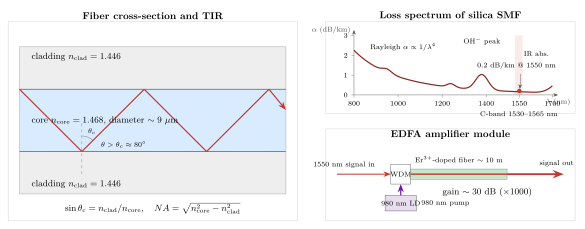

光纤里的光怎么传 100 公里不散?
上一节我们用六束激光把原子冷到微开尔文, 那是光在"操纵物质"方面的极致. 这一节把场景反过来: 物质 (一根玻璃丝) 反过来操纵光, 让它老老实实地沿着一根头发丝粗细的通道走几十、几百公里.
今天地球上每一次跨洋视频通话、每一封从东京寄到纽约的电子邮件, 几乎都要经过一次这样的过程: 激光器把电信号调制成 1550 nm 附近的光脉冲, 送进一根直径 125 μm 的玻璃丝, 它在海底爬过 $10^3$ 到 $10^4$ 公里. 这件事成立的前提有三条: 光要被"关住"不漏出去, 关住的材料要"够透明", 即便最透明也会衰减所以需要"补光". 这三件事对应本节的四个小节.
一、全内反射: 怎么把光关进一根玻璃丝
光纤能导光, 根本上靠的是全内反射 (Total Internal Reflection, TIR). 这不是什么新机制 —— 菲涅耳方程和斯涅尔定律在本书前面几节里已经反复出现过 —— 但把它做到 100 公里尺度, 要求我们对每一个细节都锱铢必较.
考虑一束光从光密介质 (折射率 $n_1$) 射向光疏介质 (折射率 $n_2 \lt n_1$) 的界面, 斯涅尔定律给出:
$$ n_1 \sin\theta_1 = n_2 \sin\theta_2. \tag{1} $$
当入射角 $\theta_1$ 大到使公式 (1) 右侧的 $\sin\theta_2$ 要求超过 1 时, 折射光就"挤不进去"了, 界面把全部能量反射回光密介质 —— 这就是全内反射. 临界条件对应 $\theta_2 = 90^\circ$, 由此得到临界角:
$$ \sin\theta_c = \frac{n_2}{n_1}. \tag{2} $$
标准单模光纤 SMF-28 的参数大致是: 纤芯折射率 $n_{\text{core}} \approx 1.468$, 包层折射率 $n_{\text{clad}} \approx 1.446$, 差约 1.5%. 代入公式 (2):
$$ \sin\theta_c = \frac{1.446}{1.468} \approx 0.9850, \quad \theta_c = \arcsin(0.9850) \approx 80.0^\circ. $$
这个 80° 是相对于界面法线量的. 在光纤的语境里, 我们更关心光线与光纤"轴线"的夹角 —— 它等于 $90^\circ - \theta_c \approx 10^\circ$. 也就是说, 只要光进入纤芯时与轴线的夹角不超过约 10°, 它碰到纤芯-包层界面就会被弹回来, 永远漏不出去.

这个 10° 的轴向接受角也可以换一种更常用的表达 —— 数值孔径 (NA):
$$ NA = \sqrt{n_{\text{core}}^2 - n_{\text{clad}}^2} \approx \sqrt{1.468^2 - 1.446^2} \approx 0.254. $$
典型单模光纤的 NA 就在 0.12-0.14 之间 (为了让模式选择更严格, 实际差比上面用的值还小一些), 意味着接收角更窄. 数值孔径越大, 越容易把光"兜进来", 但也越容易支持更多的模式 —— 鱼与熊掌. 当纤芯直径做到 8-10 μm 这个尺度时 (与 1550 nm 同数量级), 波动光学限制只允许一个横向模式存在, 我们把这种光纤叫单模光纤 (SMF). 一旦允许多个模式, 不同模式沿轴向的相速度不同, 几十公里后脉冲就糊成一片 —— 这就是多模光纤 (MMF, 纤芯 50 μm) 不能做长距离干线的原因.
二、玻璃为什么能这么透明: 瑞利、OH⁻ 与红外三面夹击
关得住光, 还要关得住的东西足够透明. 日常生活中我们对"玻璃"的直觉是: 窗玻璃几米厚就看不见东西了. 但光纤用的是高纯熔融石英, 它的透明度远超任何日常材料. 我们先定量地看一下"透明"到什么程度.
光功率沿光纤衰减遵循指数律, 用 dB/km 表示损耗系数 $\alpha$:
$$ P(L) = P_0 \cdot 10^{-\alpha L / 10}. $$
1550 nm 处, 商用 SMF 的 $\alpha \approx 0.2$ dB/km. 这是什么概念? 让我们代入 $L = 100$ km:
$$ \alpha L = 0.2 \times 100 = 20 \text{ dB}, \quad P(100\text{ km})/P_0 = 10^{-2} = 1\%. $$
100 公里之后, 光功率只剩 1%. 听起来损失不小, 但换个参照: 如果用透过一面 3 mm 窗玻璃的衰减来推算, 1 公里距离上剩下的光能连 $10^{-100}$ 都不到. 也就是说, 光纤用的石英玻璃, 比我们平时见到的玻璃"透明" $10^{90}$ 倍以上.
那为什么不是 0? 因为哪怕是理想的非晶硅玻璃, 也有三个无法回避的损耗机制.
瑞利散射 (结构涨落): 非晶态玻璃在冷却过程中被"冻"住的密度涨落, 尺度远小于光波长, 起到了"微米-纳米级小粒子"的作用. 瑞利散射截面随波长按 $1/\lambda^4$ 衰减:
$$ \alpha_{\text{Rayleigh}} \propto \frac{1}{\lambda^4}. $$
这就是为什么选长波长更划算 —— 把 $\lambda$ 从 850 nm 移到 1550 nm, $\lambda$ 翻了 1.82 倍, $\lambda^4$ 翻了 11 倍, 瑞利损耗降到约 1/11. 1550 nm 处瑞利贡献约 0.16 dB/km, 几乎就是那 0.2 dB/km 总损耗的"硬下限".
OH⁻ 吸收峰 (水分子): 玻璃制造中残留的羟基 OH⁻ 的 O-H 键弯曲/伸缩振动, 在 2.7 μm 附近有基频, 在 1.38, 1.24, 0.95 μm 处有泛频吸收峰. 如果光纤拉制时水蒸气污染严重, 1380 nm 附近的损耗能尖到 1-2 dB/km. 现代的"全波光纤"用超低 OH⁻ 工艺把这个峰压得几乎看不见, 从而打开了 E-band 这一段过去不能用的波长.
红外吸收 (声子): Si-O 键的基本振动能量对应 9 μm, 但其泛频从大约 1.7 μm 就开始显著吸光. 波长越长, 红外吸收指数上升. 这就是为什么 1550 nm 不能再往长波推 —— 再往右, 红外吸收迅速把瑞利散射的"赢"吃掉.
把这三条曲线叠起来, 在 1550 nm 处取得总损耗的极小, 这就是光通信几十年来反复强调 C-band (1530-1565 nm) 的根本原因. 这不是人类约定, 是硅原子决定的.
三、100 公里之后: 还剩 1% 和它的信噪比
现在让我们把上一节的估算往下做一步, 回答题目中那个具体问题: 100 公里之后, 这点剩下的 1% 够不够解调出原来的信号?
典型单信道光功率发射端约为 0 dBm = 1 mW. 代入 0.2 dB/km:
- 50 km 后: 剩 $10^{-1}$ mW = 100 μW, 衰减 10 dB, 仍然可直接探测.
- 100 km 后: 剩 $10^{-2}$ mW = 10 μW, 衰减 20 dB. 相干探测仍有充裕信噪比.
- 200 km 后: 剩 0.1 μW, 衰减 40 dB. 开始进入 shot noise 限制.
- 300 km 后: 剩 1 nW. 不加放大, 位错率 (BER) 就撑不住了.
所以"100 公里"这个数字不是偶然的 —— 它是一段"无中继光纤"的经济合理长度. 海底光缆工程师把中继器布在每 80-100 km 一个, 就是让每一跳的衰减控制在 16-20 dB 内, 给接下来的放大器留下足够的信噪预算.
但"剩下 1%"并不是光纤的终极故事. 因为除了功率衰减, 还有色散 (不同频率分量传播速度不同) 和非线性 (高功率下折射率随强度变化) 要管. 好在 1550 nm 附近有所谓零色散波长附近的设计窗口, 加上色散补偿光纤 (DCF) 和数字信号处理, 这些问题都能被"装回盒子里". 我们这里只管功率.
功率怎么补回来? 答案就是本节第四个主角.
四、EDFA 与一段历史: 掺铒、980 nm 泵浦、30 dB 增益
1987 年, 英国南安普敦大学的 David Payne 团队做了一件事: 在光纤的一段上掺入极微量的稀土元素铒 (Er³⁺), 然后用一束 980 nm 或 1480 nm 的"泵浦激光"从旁边打进去. 结果是, 沿这段掺铒光纤走过的 1550 nm 信号光, 功率被放大了 30 dB (1000 倍). 这个装置叫掺铒光纤放大器 —— Erbium-Doped Fiber Amplifier, EDFA.
原理是受激辐射, 和激光器用的是同一条规则. Er³⁺ 的 $^4I_{13/2} \to {}^4I_{15/2}$ 能级跃迁正好对应 1530-1565 nm —— 这就是为什么 EDFA 专治 C-band. 980 nm 泵浦把 Er³⁺ 从基态打到 $^4I_{11/2}$, 它快速非辐射跃迁到亚稳的 $^4I_{13/2}$ (亚稳态能持续约 10 ms, 这个长寿命是放大的关键). 当 1550 nm 信号光子进来, 就触发 Er³⁺ 受激辐射同样频率、同样相位的新光子. 信号被放大, 同时 Er³⁺ 回到基态等待下一次激发.
EDFA 有三个无可替代的好处:
- 全光放大. 不需要把光转成电信号再转回来 —— 中继器是纯光子器件, 失真极小.
- 带宽宽. 一台 EDFA 可以同时放大 C-band 里几十个波长通道 (见下一节的 WDM), 而不是一个波长一台放大器.
- 噪声可控. 自发辐射噪声 (ASE) 被限制在理论下限的 3 dB 左右, 留给信号的信噪空间足够用.
一条 1000 km 的海底光缆, 通常就是几十个 "80-100 km 光纤段 + 一台 EDFA" 的串联. 在 EDFA 出现以前, 人们用"光-电-光"电中继, 既贵又限速; EDFA 把这件事的经济学整个翻过来 —— 大西洋海底电缆的带宽从 80 年代的 $10^{-1}$ Gbit/s 跃到 90 年代的十几 Gbit/s, 现在已是 100 Tbit/s 量级.
说到历史, 不能不提 1966 年. 那一年, 在英国标准电信实验室工作的年轻工程师高锟 (Charles Kuen Kao, 后来的香港中文大学校长) 和 George Hockham 发表了一篇《Dielectric-fibre surface waveguides for optical frequencies》. 当时最好的玻璃损耗是 1000 dB/km —— 也就是说, 光走 20 米就衰到探测限. 绝大多数同行认为用玻璃做长距离通信是"科幻". 但高锟在这篇论文里做了一件关键的事: 他把"玻璃不透明"这件事, 拆成"本征损耗 (瑞利散射 + 红外吸收) + 杂质吸收 (主要是铁、OH⁻)", 并论证本征损耗的下限其实在 10-20 dB/km 级别. 剩下的 980 dB/km, 是可以通过提纯去掉的. 他估算出 20 dB/km 的可行目标, 并指出这是商用的分水岭.
1970 年, 美国康宁公司 (Corning) 的 Robert Maurer 团队真的把损耗做到了 20 dB/km. 1980 年代中期, 各种商用光纤普遍降到 0.2 dB/km —— 整整降了 4 个数量级, 超出高锟最初的期望. 2009 年, 高锟因为"关于光在光纤中传输以用于光通信的开创性成就"与两位 CCD 发明人共享了诺贝尔物理学奖. 从他的论文到瑞典皇家科学院的电话, 整整 43 年 —— 这大概是物理学史上从预言到验证、从验证到应用、从应用到奖章之间最直接、最干净的一条路径.
最后说极限. 0.2 dB/km 已经非常接近瑞利散射给硅玻璃划的下限 (约 0.16 dB/km). 要继续往下走, 只能换材料: 比如氟化物玻璃 ZBLAN, 理论极限 0.001 dB/km, 意味着 10000 km 不加放大还能剩下几成光 —— 那基本就是海底光缆"不要中继器"的梦. 但 ZBLAN 拉制困难、机械脆弱, 目前还在实验室. 近年在硅玻璃基础上发展的中空光纤 (光在空气芯里走) 则是另一条路 —— 空气没有瑞利散射, 但有其他问题. 不管哪条路, 物理学家已经在 2 dB/km 和 0.16 dB/km 这之间逼到 [某一具体实验室记录] 的程度, 留给人类继续抠的空间, 大概就是几分之几 dB 而已.
小结
这一节我们看到了光作为"信息使者"的工程形态: 全内反射由简单的斯涅尔定律推出, 给了我们一个 80° 的临界角和一条不漏光的玻璃丝; 瑞利散射和 OH⁻ 吸收共同选出了 1550 nm 这个透明窗口, 把损耗按着 $1/\lambda^4$ 的规律压到 0.2 dB/km; 指数衰减让 100 公里剩 1%, 而受激辐射——就是那个从爱因斯坦 1917 年开始、贯穿激光、激光冷却、原子钟到 EDFA 的线索——再一次上场, 把衰减掉的 20 dB 补回来. 一根玻璃丝、一个临界角、一条 1/λ⁴ 曲线、一次受激辐射, 四件事串起来, 就是今天整个互联网的物理底座. 下一节我们把这根光纤的"一根信道"复用成几十根——WDM 波分复用, 让一束光承担一座城市的对外带宽.
▲